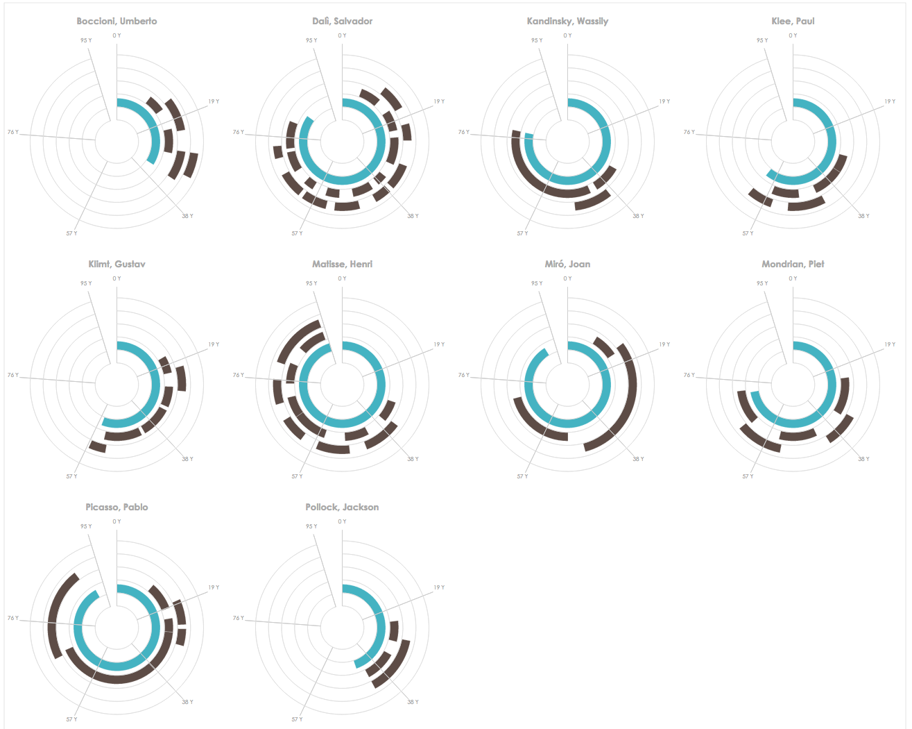

Each video story shown below is described using tuples from our timeline design space, described using the following format:
[Representation] | [Scale] | [Layout]
Each video story shown below is described using tuples from our timeline design space, described using the following format:
[Representation] | [Scale] | [Layout]
Data: The daily routines of famous creative people (by Podio), coloured by activity type, faceted by person.
Duration: 3m 43s
Visualizations featured (and transition times):
(0:00)


(0:24)


(2:26)


(2:55)


(3:24)


Data: Visualising painters' lives (by Accurat), coloured by event category, faceted by painter.
Duration: 5m 10s
Visualizations featured (and transition times):
(0:00)


(0:19)


(0:52)


(1:07)


(1:48)


Note: Alternatively, this "scene" could have been depicted using this Radial-Relative visualization, which has a more compact aspect ratio and will afford comparisons of arc length, requiring shorter eye movements and less scrolling than the Linear visualization. Many of the other narrative points in this story refer to Chronological and Relative synchronicities in the painters' lives, and these points are best supported by Linear representations; as a consequence, a brief transition to a Radial representation to serve a single narrative point is not likely to be useful.

(3:07)


(4:07)


(4:44)


Data: The life of a typical American (by T. Urban), coloured by event category.
Duration: 2m 10s
Visualizations featured (and transition times):
(0:00)


(0:17)


(0:34)

(0:53)


(1:57)

Data: HURDAT Hurricane data (from the National Oceanic and Atmospheric Administration, Atlantic Oceanographic and Meteorological Laboratory, Hurricane Research Division), coloured by hurricane severity.
Duration: 4m 44s
Visualizations featured (and transition times):
(0:00)


(0:09)


(0:17)


(0:27)

(3:24)


(3:49)

(4:06)


(4:13)


(4:26)


Data: German Chancellors (Wikipedia), coloured by political party.
Duration: 1m 50s
Note: This story showcases a non-chronological progressive disclosure of events (a form of storytelling not supported by existing timeline presentation tools). It does not feature transitions between different timelines visualizations.
Visualization featured:
(0:00)


Data: Deepwater horizon oil spill (demo dataset included with TimeFlow), coloured by event category.
Duration: 3m 25s
Visualizations featured (and transition times):
(0:00)

Note: Notice the potentially jarring Grid (Calendar) to Linear transition.
(0:10)


(0:35)


Note: some manual "on-the-fly" annotation of events begins at 2:27.
(3:00)


(3:11)


Note: The Arbitrary timeline is superimposed upon an image of the Deepwater horizon oil platform.
Data: Countdown to Singularity (by R. Kurzweil).
Duration: 1m 31s
Visualizations featured (and transition times):
(0:00)


(0:24)


(0:30)


(0:46)